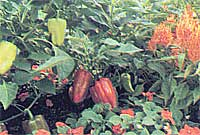

Under still-chilly banks of brown-tinted, aging snow, slow droplets of melt soften the awakening soil. Brave, bright crocuses break the newly thawed earth, mild breezes compete with the last of winter's cold winds, and eager gardeners-won dering if it's still too early to plant a few rows of peas-rejoice in the opening scenes of spring's stately pageantry.
Occasionally-with all the hoopla about the new flower and vegetable introductions from the "big boys"-we tend to forget about the offerings of small seed houses. Yet such firms are often quietly working to preserve varieties that have never even been included in-or have all but disappeared from-the larger catalogs.
The Abundant Life Seed Foundation (Dept. TMEN, P.O. Box 772, Port Townsend, Washington 98368), for example, specializes in plants native to the North Pacific Rim ... especially rare and endangered species that are not generally commercially available. The foundation offers seeds of trees and shrubs, garden and wild flowers, herbs, vegetables (all open-pollinated and untreated), and sprouts ... and will even barter for needed seeds, tools, office supplies, or donated labor. So if you'd like to plant a few Saskatoon serviceberry trees... or a stand of thimbleberries or Himalayan blackberries ... or a patch of Gramma Walters pole beans (perhaps allowing the vines to climb the stalks of some Black Aztec corn), send $2.00 ($2.60 in Canada) for a two-year subscription to the foundation's catalog. It's worth every penny!
Another outfit that specializes in uncommon "kernels" is the Prairie Seed Source (mail 50 cents for a catalog to either Dept. TMEN, P.O. Box 1131, Des Moines, Iowa 50311... or Dept. TMEN, P.O. Box 83, North Lake, Wisconsin 53064). The Prairie Seed folks are devoted to the preservation of the prairie plants that once covered ten states and two Canadian provinces ... but which have-during the past 200 yearsbeen plowed, paved, or poisoned almost out of existence.
Wholistic gardeners have developed a great number of insect- and disease-control strategies... which include organic sprays, companion plantings, and "everybody get out in the garden with a can of kerosene" bug-picking parties. But folks often forget about one of the most important weapons in the natural gardener's arsenal: the careful selection of resistant plant varieties. A few minutes of research in seed catalogs can save you many hours of backyard toil, and increase your garden's yield.
You could-for example- fret about the fungus that's always laid waste your cucumbers in the past ... or you could plan ahead and set out one of the "super cukes" with resistance or tolerance to anthracnose, powdery and downy mildew, angular leaf spot, and scab. Look for Sweet Slice and Victory among the table vari eties, and Liberty and Saladin for pickling.
Corn can be susceptible to a variety of insects, diseases, and environmental stresses ... but resistant cultivars do exist. Burpee's Honeycross is wilt-resistant, and the ears are well protected from earworm and smut damage. lochief-an All-America selection from a few years back-is celebrated for its resistance to drought. And Florida Staysweet, one of the extra-tasty "super sweet" varieties, tolerates leaf blights and has a lowered sensitivity to MDM virus.
Lettuce is one of the most popular garden crops, but many backyard growers are disappointed when the plants bolt to seed in the summer heat. Try cultivating Buttercrunch, Summer Bib, or Green Ice ... and chances are you'll have saladmakings well into the hot weather, and maybe even all summer long.
Many folks also like to use peppers to perk up a bowl of greens, but gardeners-especially those in cooler areas-often have problems with poor fruit set as a result of chilly nights. However, both New Ace and Canape, finetasting peppers in their own right, laugh at adverse weather ... while Resistant Giant Number 4 boasts some immunity to tobacco mosaic virus.
Mildew often cuts short the summer squash season, but Twilley's Ambassador zucchini and Zucchini Select (from Stokes) are both resistant to powdery mildew ... and the former also tolerates downy mildew. Plant these varieties and harvest bumper crops right up until frost!
Almost everybody loves tomatoes, but nobody likes the red fruit's too frequent companion ... blossom-end rot. Sometimes-no matter how careful you are about watering and working calcium-rich crushed eggshells into the soil-half the crop of 'maters will show those leathery patches. But if you make sure to plant a few Floramerica vines, you'll always have some unmarked fruit: This tasty recent AllAmerica winner is tolerant of (or resistant to) 15 tomato diseases ... including blossomend rot.
Save yourself some work, and choose resistant varieties. And, this summer , take an inventory of the ailments your vegetables are susceptible to. Then, next spring, you'll be able to make even better-informed choices.
The parade of fine gardening books never seems to end, and two that have come our way recently deserve mention. The Complete Book of Herbs and Herb Growing by Roy Genders (Sterling Publishing Co., 1980... it's available at bookstores or-for $8.95 plus 95 cents shipping and handling-from Mother's Bookshelf, P.O. Box 70, Hendersonville, North Carolina 28791) is a beautifully illustrated volume that is crammed full of information about more than 100 medicinal and culinary herbs. Genders brings a lifetime of gardening experience to this fine work ... which-along with Park's Success With Herbs ( $9.95 from George W. Park Seed Co., Dept.
TMEN, P.O. Box 31, Greenwood, South Carolina 29647 )-would form a perfect basic herb-grower's library.
And, for all those folks who want the guesswork taken out of their gardening, MOTHER has recently produced (and is pretty danged proud of) her Guide to (almost!) Foolproof Gardening. .. see the ad on page 117!
|
 Choose hardy varieties and your vegetable garden will thrive |
|
|